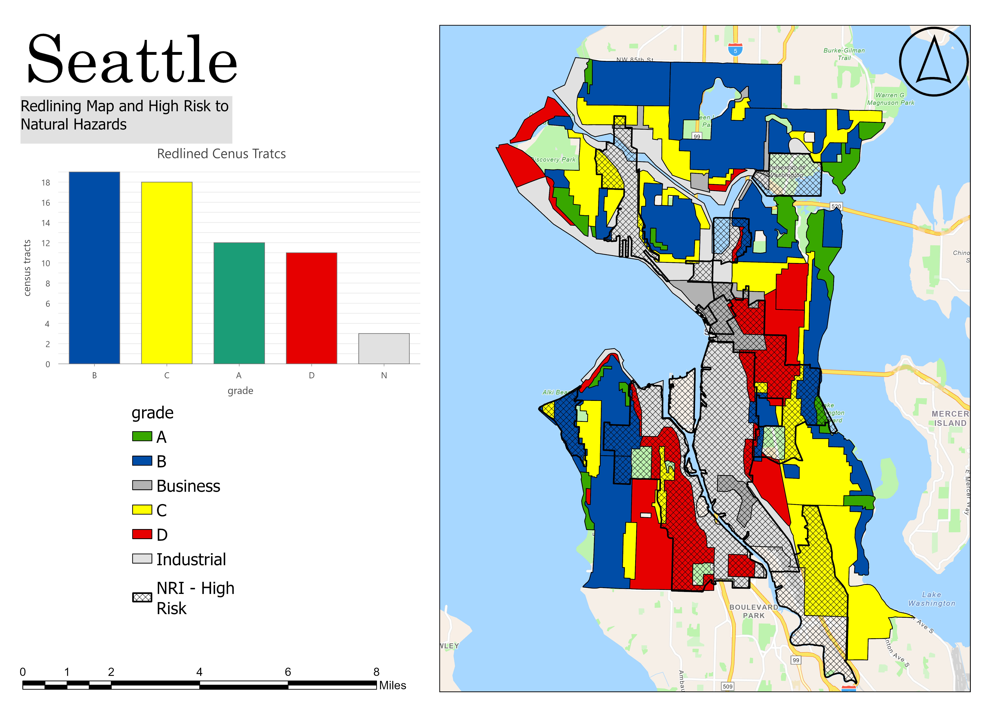

About Me

I am a Master's student in Geography at the University of Denver specializing in GIS, hazard vulnerability, climate displacement, and environmental justice. My graduate thesis is a two-year research project focused on climate displacement vulnerability across the United States using GIS, OLS regression, and spatial decision support tools.
I am pursuing GIS Analyst, Environmental Justice GIS, Hazard Geography, Emergency Response, Adaptation, Mitigation, and Climate Risk roles.
Outside of GIS
I enjoy hiking and spending time outdoors with my cat Apollo, who I even take on walks.


Featured Thesis Project: Hazard Gentrification & Environmental Justice

My two-year graduate thesis examines how historical redlining aligns with race, income, education, and natural hazard exposure across Seattle. The project investigates whether vulnerable communities face increased risk of hazard gentrification and climate-driven displacement.
LiDAR-Based Landslide Susceptibility Assessment

LiDAR-derived DEMs, slope analysis, and hillshade modeling were used to identify landslide-prone zones near Mercer Island and the I-90 corridor for hazard mitigation planning.
Resume
Education
University of Denver
Master of Arts in Geography — Expected June 2026
University of Central Oklahoma
B.A. Geography, Minor in Marketing
Professional Experience
Graduate Teaching Assistant — University of Denver
GIS Mapping Specialist — Reagan Smith Inc.
Freelance GIS Analyst
AI Trainer Fellowship — Handshake
Technical Skills
ArcGIS Pro, ArcGIS Online, ArcMap, QGIS, SQL, PostgreSQL, LiDAR Processing, Spatial Analysis, OLS Regression, Hazard Mapping, Dashboard Development, Cartography, Environmental Justice Analysis
Contact
Email: your-email@email.com
LinkedIn: add your LinkedIn URL
Location: Denver, Colorado